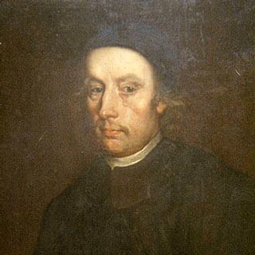

Mučenici iz Engleske i Walesa (10 svetaca)
Svećenik
Sv. Edmund Arrowsmith
1585. – 1628.
U Lancashireu je putovao od kuće do kuće, slaveći misu među obiteljima koje nisu mogle slobodno živjeti katoličku vjeru. Zbog svećeničke službe bio je zatvaran i naposljetku pogubljen u Lancasteru.

Izvor slike
- Spomendan
- 28. kolovoza
- Zaštitništvo
- Nije navedeno u izvoru
- Životni vijek
- 1585. – 1628.
- Djelovanje
- Misije i evangelizacija · Progoni i progonstvo · Mučeništvo
- Razdoblje
- 16., 17. stoljeće
- Rođenje — dostupni podaci
- 1585.; dan i mjesec nisu potvrđeni u provjerenom izvoru.
- Mjesto rođenja
- Lancashire, Engleska
- Datum smrti
- 28.08.1628.
- Mjesto smrti/mučeništva
- Lancaster, Engleska
- Okolnosti smrti/mučeništva
- Obješen, zatim mu je tijelo rasporeno i raščetvoreno zbog katoličkoga svećeništva.
- Uloga
- Svećenik
- Mučenik
- Da
- Ostale oznake
- Mučenik engleskih protukatoličkih progona
- Pripadnost
- Isusovac
- Drugi oblici imena
- Edmund · Brian Arrowsmith · Bryan Arrowsmith
Životopis
Sveti Edmund Arrowsmith bio je engleski svećenik i isusovac koji je petnaestak godina služio katolicima u Lancashireu. Putovao je od kuće do kuće i slavio misu u domovima u kojima su se vjernici mogli okupljati. Zbog svećeničke službe bio je zatvaran, a 28. kolovoza 1628. pogubljen je u Lancasteru. Crkva ga časti kao jednoga od Četrdesetorice mučenika Engleske i Walesa. Uz njegovo je ime ostala osobito povezana uspomena na svetu misu, svećenika na putu i katoličke obitelji koje su mu otvarale vrata.
Rođen je oko 1585. u Haydocku, u Lancashireu, kao najstarije dijete Roberta Arrowsmitha i Margery Gerard. Obitelj mu je bila katolička i trpjela je pritiske zbog toga što se nije htjela odreći svoje vjere niti sudjelovati u protestantskim bogoslužjima. Na krštenju je dobio ime Brian, koje se zapisuje i kao Bryan. Ime Edmund uzeo je pri krizmi i pod njim postao poznat u svećeničkom i redovničkom životu.
Vjerske su prilike zahvaćale obiteljski život vrlo neposredno. U životopisima se pamti odvođenje njegovih roditelja u zatvor u Lancasteru, nakon čega su se za djecu pobrinuli susjedi. Jedan mu je djed umro u zatvoru u Salfordu. Njegova majka pripadala je obitelji Gerard, iz koje su potjecali i katolički svećenici.
Godine 1605. otišao je iz Engleske na školovanje u Engleski kolegij u Douaiju. Imao je oko dvadeset godina i želio je postati svećenik. Njegova izobrazba nije tekla bez prekida: zbog narušena zdravlja morao se vratiti u domovinu. Nakon oporavka ponovno je 1607. otišao u Douai i nastavio pripravu za ređenje.
Uz studij je za njegovo zvanje bilo važno iskustvo duhovnih vježbi. U Douaiju se upoznao s njima i počeo razmišljati o ulasku u Družbu Isusovu. Isusovački poziv nije odmah mogao ostvariti, ali ga je zadržao tijekom prvih godina svećeništva. Njegov je kasniji ulazak u red bio povezan s tim iskustvom iz godina školovanja.
Za svećenika je zaređen u Arrasu, a u lipnju 1613. vratio se u Lancashire. Ondje je započeo službu koja će potrajati do njegova posljednjeg uhićenja. Katolike je posjećivao u njihovim kućama i na seoskim gospodarstvima te kod njih slavio misu. Putovanje, prihvat u domu i priprava mjesta za misu pripadali su konkretnim okolnostima njegova pastorala.
Na takvu službu podsjeća malen kovčeg s misnim ruhom i priborom koji se čuva u Stonyhurstu. Povezan je osobito s Arrowsmithovom službom, a moguće je da se njime služio i njegov svećenički suvremenik John Southworth. Među sačuvanim predmetima nalaze se oltarni kamen, kositreni kalež, prsten za moljenje krunice i knjiga. Misno ruho i pribor omogućivali su svećeniku da pripremi slavljenje mise u različitim domovima.
Oko 1622. Arrowsmith je uhićen i ispitan pred anglikanskim biskupom Chestera. Poslije je oslobođen u vrijeme kada je kralj Jakov I. ublažio postupanje prema zatočenim katoličkim svećenicima, povezano s pregovorima o ženidbi svojega sina sa španjolskom princezom. Sloboda mu je omogućila nastavak službe. U prvoj polovici dvadesetih godina 17. stoljeća pristupio je Družbi Isusovoj i ostvario zvanje o kojem je razmišljao još u Douaiju. Kao isusovac nastavio je djelovati među katolicima svojega kraja.
Posljednje uhićenje uslijedilo je u ljeto 1628. Prema životopisnim izvještajima, vlastima ga je prijavio čovjek prezimena Holden. U bijegu je stigao do močvarnoga područja Brindle Moss, gdje njegov konj nije htio preskočiti jarak. Ondje je uhvaćen, a zatim izveden pred sud u Lancasteru i osuđen zbog toga što je bio katolički svećenik u Engleskoj. U zatvoru je bio i svećenik John Southworth, koji je čuo njegovu posljednju ispovijed.
Pogubljen je u Lancasteru 28. kolovoza 1628., u dobi od oko četrdeset i tri godine. Nad njim je izvršena kazna vješanja i raščetvorenja. Crkva u njegovoj smrti prepoznaje mučeništvo za katoličku vjeru i svećeničku službu.
Uspomena na njega sačuvala se među vjernicima i u obitelji. Njegova desna ruka očuvana je kao relikvija i danas se časti u crkvi svetoga Oswalda i svetoga Edmunda Arrowsmitha u Ashtonu-in-Makerfieldu. Župi je predana 1929., godine njegova proglašenja blaženim. Crkva je građena i kao svetište te relikvije.
Blaženim je proglašen 1929., a papa Pavao VI. proglasio ga je svetim 25. listopada 1970. među Četrdesetoricom mučenika Engleske i Walesa. Spomendan mu je 28. kolovoza. U engleskom nacionalnom kalendaru obuhvaćen je skupnim blagdanom Engleskih mučenika 4. svibnja, dok se engleski i velški isusovački mučenici skupno slave 1. prosinca. Župna litanija Četrdesetorici mučenika uključuje i njegovo ime te zaziva njihov zagovor za vjernost svetoj misi. Time ostaje živa ona središnja veza njegova života: svećenik je dolazio k obiteljima kako bi im donosio Krista u euharistiji, a pred vlastitom je smrću potražio Kristovo oproštenje u ispovijedi.
Život i nasljeđe
Arrowsmith je u djetinjstvu osobno doživio posljedice progona svoje obitelji. Kad su mu roditelji odvedeni u zatvor, ostao je bez njihove neposredne zaštite. Takva rana iskustva daju dodatnu pozadinu njegovu kasnijem povratku u Lancashire. Nije dolazio u potpuno nepoznatu sredinu: vraćao se među ljude čiji je položaj poznavao i preko vlastite obiteljske povijesti.
Studij u Douaiju morao je prekidati zbog slaboga zdravlja. Put prema ređenju stoga nije bio jednostavan školski napredak bez zapreka. Prije stupanja u Družbu već je više godina djelovao kao svećenik. Dio redovničke priprave obavljao je u okolnostima same misije, uz povlačenje radi duhovnih vježbi. Takav put razlikuje se od života novaka koji čitavu pripravu provodi u sigurnoj i javno poznatoj redovničkoj kući.
U njegovu posljednjem zatočeništvu posebno se spominje Ivan Southworth, drugi svećenik koji će kasnije i sam biti pogubljen. Southworth mu je prije odlaska na stratište dao odrješenje. Taj susret pripada dokumentiranim vezama među mučenicima, za razliku od povezivanja samo na temelju istoga dana štovanja. U Lancashireu je uspomenu na Arrowsmitha osobito očuvalo čašćenje njegove relikvije, poznate kao sveta ruka. Povijest takva štovanja nastavlja se nakon njegova života i govori o zajednicama koje su u njemu vidjele zagovornika i svjedoka vlastite vjere.
Pročitaj više na izvornoj stranici ↗